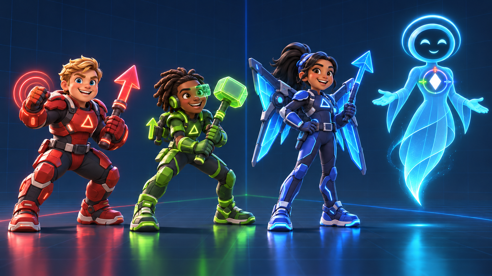

X / Forward

An original Hermetic Labs world
Pause. Predict.
Inspect. Repair.
Logic League turns direction, cause, and consequence into adventures young minds can see, question, and solve.
Meet the League01 / Meet the League
Three directions.
One remarkable team.
Xander, Yuri, and Zaya bring different instincts to every mission. EVE helps them turn those differences into a system they can understand—and use together.

Y / Lateral
Yuri
The thoughtful strategist who sees every possibility.Z / Vertical
Zaya
The fearless flyer who changes the point of view.EVE / Origin
EVE
Their calm, luminous guardian and guide.02 / The system
How the League moves.
Every agent reads a problem differently. Together, their movements form the coordinate system that holds the Logic League world together.

The team can resolve directly into the compact logo—turning story movement into brand movement.
X / Forward
Force with purpose.A direct red thrust—clear, decisive, and pointed toward the next problem.
Y / Lateral
Balance the field.A broad green reach that makes side-to-side relationships visible.
Z / Vertical
Rise and reveal.A blue flight path that opens a new view of the whole system.
EVE / Origin
Guidance at center.A luminous guide anchored by a diamond core: the shared point where every direction begins.
03 / Character files
Every glitch has a personality.
Click Bait's Deprecators turn broken logic into visible, funny, fixable trouble. Their flaws shape the problem—and reveal the clue that can repair it.

TY / Broken language
Typo
Rewrites trusted words until the meaning slips away.
01 / Inversion
Boolz
Flips every yes into no and every go into wait.
EL / If or else
Elsephine
Changes direction before any choice can resolve.
Ø / Missing reference
Nullbert
Forgets the plan—and sometimes deletes the path home.
SG / Legacy code
Segmunk
Copy-pastes old parts and calls himself a genius.
∞ / Recursion
Loopus
Repeats the same trouble until someone changes the pattern.04 / Season one
Twelve missions.
One system at risk.
Season One begins with three new agents and builds toward the first full synchronization of the Logic League.
S01 E01 · Scripted
Terms & Conditions
A suspicious shortcut costs a young gamer his account. On their first mission, the new League must isolate the corrupted code—and learn why the fine print matters.Typo · Trust the termsS01 E02
Buffering...
A school stream freezes inside a logic loop. Xander charges ahead, but getting everyone moving means syncing before striking.Boolz · Slow down to move forwardS01 E03
Why-Fi
Family photos vanish into a sketchy cloud app. Yuri sees every route, but saving the memories means choosing one.Elsephine · Choose who to trustS01 E04
Z-Cache
A voice message echoes through a corrupted backup. Zaya's empathy becomes the one signal the team can follow.Nullbert · Feelings need safe channelsS01 E05
Root Access
A memory leak reaches EVE's earliest code. The League must discover why their guide is different—and why they cannot leave without her.Segmunk · Smart choices need guidanceS01 E06
Phishing Season
A livestream exposes a password and unleashes endless fake messages. The one real signal may reveal Click Bait's larger plan.Loopus · Protect what you shareS01 E07 · New agent
Two-Factor Trouble
A fake security prompt drains a player's inventory. Cipher can unlock the trap—if the team can adjust to her layered logic.Typo · Protection requires attentionS01 E08
Firewall Friends
A lovable AI pet becomes a clingy digital trap. Cipher helps Zaya balance heart with hardware.Elsephine · Real friendship has boundariesS01 E09 · Origin story
Clickbaited
A personality quiz starts harvesting a child's identity. The trail reveals the forgotten sandbox bot Click Bait used to be.Click Bait · Curiosity needs cautionS01 E10
Logic Loop
Yuri and Cipher enter a puzzle that resets whenever they almost solve it. Escaping means trying a different kind of thinking.Loopus · Mistakes can move us forwardS01 E11
Patch Day
Bugs overwhelm the city as the League risks updating EVE without complete testing.Segmunk · Test, prove, trustS01 E12 · Season finale
System Restore
Click Bait releases a viral wave across Point Cloud City. The League must fully synchronize—and EVE's ultimate repair may come at a cost.All Deprecators · Think together05 / Play the system
Small missions.
Real reasoning.
Two finite, privacy-friendly prototypes: no account, no tracking, no endless loop. Play, finish, and explain what changed.
Game 01 · Signal Match
Match the League
Turn over two signal cards. Match all four team members in the fewest moves.
0 pairs · 0 moves
Game 02 · Bug to Bunny
Repair the packet
Tap the corrupted packets to send EVE's soft three-note repair pulse. Fix six before the signal closes.
Mission standing by
6 repairs · 20 seconds · one clear ending
06 / Approach
Delight in service of agency.
X / Story
Problems you can see.
Young agents make direction, cause, and consequence visible.
Y / Method
Learning through repair.
Orient, predict, act, observe, repair, explain, and transfer.
Z / Trust
Useful, finite, inspectable.
Built to support reasoning and agency—not endless engagement.
07 / Status
The world is taking shape.
Season One story development, character production, learning design, sound, and interactive systems are in active development. No release date has been announced.